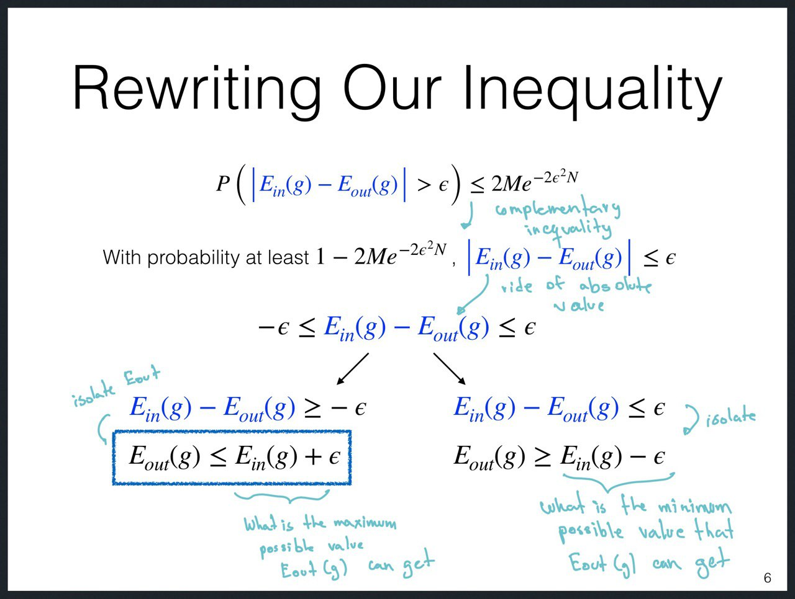

A ==Generalization bound== help us to understand how the Generalization
Error $E_{out}$ could be, even though we cannot compute it.
In order to understand that, the bound is defined in terms of the
training error $E_{in}$, which we can compute.
Starting from ==Hoeffding Inequality==, we can derive two possible
escenarios, which defined
- ==Maximum Bound==: What is the **maximum** possible value for $E_{out}$
- ==Minimum Bound==: What is the **minimum** possible value for $E_{out}$

A Generalization Bound is other way to understand if Learning is feasible or not, we will came up to similar conclusion as only analyzing Hoeffding Inequality.